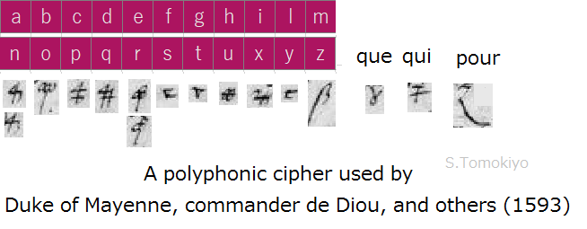
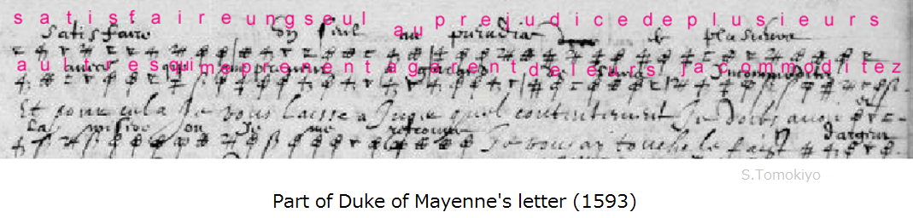
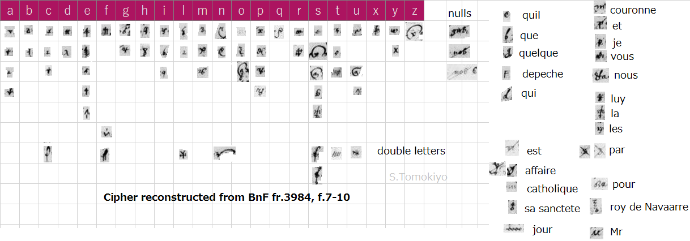
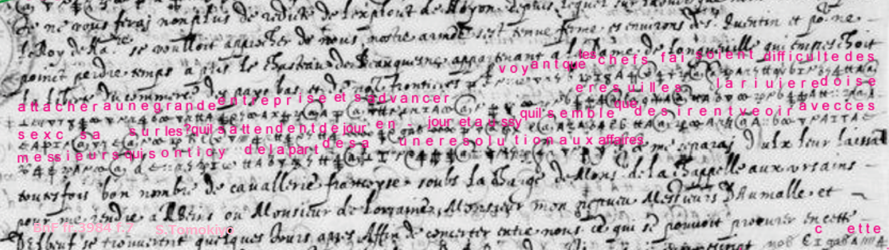

A cipher prevents a third party from reading a message. Homophonic substitution enhances its security by providing several cipher symbols for a plaintext letter. On the other hand, polyphonic substitution uses the same symbol for several plaintext letters. This must be confounding even for the intended recipient of the message because there are more than one reading for a given cipher symbol. Practical aspects of polyphonic substitution are reviewed in A. Ross Eckler (1975), "A Readable Polyphonic Cipher" (pdf), which proposes a workable assignment of the letters of the alphabet to figures 1-9 (with "0" reserved for a word break to aid deciphering).
Historically, polyphonic substitution was actually used in 16th-century Italy (see another article) but was not widely used otherwise. A polyphonic cipher related to the Grand Duke of Tuscany around 1590 is presented in another article and a similar cipher in the Nevers collection is mentioned in another article. Another example is Cp.24, possibly related to Spanish ambassador de Spes in England but having a nomenclature in Italian, for which see another article. A letter (1568) from Mary, Queen of Scots, to a Spanish ambassador before de Spes was accompanied with a polyalphabetic and polyphonic cipher (see another article).
Polyphonic substitution was reportedly used in 1832 by the Duchess of Berry, the widow of the second son of Charles X of France, who had been dethroned by the July Revolution in 1830. In 1841, Edgar Allan Poe challenged the reader of his magazine for sending in a note enciphered in the same manner as the Duchess of Berry's cipher but ended up in complaining that one cryptogram he got had as many as four letters (e, i, s, w) represented by the cipher symbol "i" and a word "wise" might have been enciphered as "iiii" (another article (in Japanese))! (Poe, E.A., "A Few Words on Secret Writing", Graham's Magazine, July 1841, 19:33-38 (online)) David Kahn suggests a possibility that the actual cipher used some diacritics to distinguish letters represented by the same symbol but Poe's source omitted them (Kahn p.787).
The substitution table used by the Duchess of Berry is obtained by using a keyphrase "Le gouvernement provisoire"
plaintext ：abcdefghijlmnopqrstuvxyzFrom the construction, this kind of cipher can be called a keyphrase cipher (Kahn p.787), which is also polyphonic (unless the keyphrase is a pangram).
Use of a keyphrase cipher by Armand de Bourbon, Prince of Conti, in March 1649, was revealed by George Lasry in "Armand de Bourbon's Poly-Homophonic Cipher - 1649" (HistoCrypt 2023).
plaintext ：abcdefghilmnopqrstvxzIt can be seen that the key is derived from a keyphrase in French "J'aime c'est un grand mal". (The symbols for X and Z cannot be explained with the keyphrase. They are the same as symbols for S and C, respectively. The letters A and R may also be represented with "a" or "o", but they are relatively few and may be errors rather than homophones.)
According to Friedrich Bauer (2006), Decrypted Secrets (Google) 2.4.1 (p.37), Charles Babbage solved in 1853 a message of a loving couple beginning with "1821 82734 29 30 84541" (including two errors), which reads "thou image of my heart". The "SA Cipher", a code used by the British Admiralty in 1918 (Sect 4.4.3, Fig.37) is also said to have been polypohnic (e.g., "07708" stands for "Hornet, H.M.S.", "Referring", or "Wednesday"), but these entries seem to be marked with "A", "B", and "C" and its usage should be checked.
Polyphonicity may occur inadvertently. The checkerboard cipher used between George Calvert, English Secretary of State, and Thomas Roe, ambassador to Constantinople in 1623 has polyphonic assignments due to an inappropriate choice of a keyword. The plaintext letters A and C are represented by the same symbol "nu" and similarly for the pairs F/H, L/N, Q/S, and W/Y (see another article).
The present author found that one of the ciphers used by the Duke of Mayenne (then head of the Catholic League), commander de Diou (ambassador in Rome for the Catholic League), and others in 1592-1593 employed polyphonic substitution.
The letters enciphered with this are as follows:
BnF fr.3982
(f.97) from commander de Diou, to "monseigneur le president Janyn [Janin], conseiller d'Estat", Rome, 27 October 1592
(f.101) from Anne de Perusse d'Escars de Givry, Bishop of Lizieux (Wikipedia), to "monseigneur", Rome, 27 October 1592
(f.124) from commander de Diou to Duke of Mayenne, Rome, 12 November 1592
BnF fr.3983
(f.106) from Charles de Lorraine, Duke of Mayenne, to commander de Diou, Soissons, 28 February 1593
(f.108v) from Charles de Lorraine, Duke of Mayenne, to commander de Diou, Soissons, 4 March 1593
(f.211) from Charles de Lorraine, Duke of Mayenne, to commander de Dyou [Diou], Camp of Han, 1 April 1593
BnF fr.3984
(f.176) Baudouin-Desportes to Pope Clement VIII, Paris, 22 July 1593
Deciphered on a separate sheet.
(f.188, 184) Baudouin-Desportes to Bishop of Lizieux, Paris, 22 July 1593
F. 184 is a decipherment of f.188.
(f.186) Baudouin-Desportes to Pietro Aldobrandini, Paris, 22 July 1593
Enciphered passages are undeciphered.
(f.189) Baudouin-Desportes to Hieronimo Frachetta, Paris, 22 July 1593
Undeciphered.
(f.274) Bishop of Lisieux to Desportes, Sr. de Beuvillier, Rome, July 1593
Neatly written interlined decipherment.
BnF fr.4715
Undeciphered ciphertext on f.61 appears to be in this cipher. See another article.
The reconstructed cipher is as follows.

Sharing the same symbol by high frequency letters "e" and "r" means a succession of the symbol three times may easily occur (as in "ere" "rer" "ree" "err"). In addition, due to the similarity of the symbols for "a/n", "c/p", and "d/q" as well as the variation in handwriting may cause confusion when the "4"-like symbol occurs one after another.
The following is a specimen of the use of this cipher (taken from f.108 of BnF fr.3983).

The Duke of Mayenne, who used the above polyphonic cipher in April 1593 in writing to Commander de Diou, used a more conventional homophonic substitution cipher in May 1593 in writing from Paris to the same recipient (BnF fr.3984, ff.7-10).
The following is my reconstruction of this cipher. A symbol like "x" is used to represent "c", "p", and "y". (Right after uploading this reconstruction, I found the original cipher in BnF fr.3995, no.55 (see another article) while browsing the file for a different purpose. At first, I thought the Duke realized the inconvenience of the polyphonic cipher but if the date "1592" on the original cipher is correct, this cipher was made before use of the above polyphonic cipher.)

(The first clue in reconstructing the above cipher came from an undeciphered symbol like "7 with three dots" on the third line. It allowed identifying the symbols for "que" and "je" occurring nearby, which in turn revealed that the symbol "F" near the beginning represented "depeche" rather than its initial letter "d". When "l-a" could be identified near "que", I was sure I was on the right track.)
The decipherment on a separate sheet (f.8) omits the few lines of the second portion in cipher (f.7), which can now be deciphered for the most part as follows.
